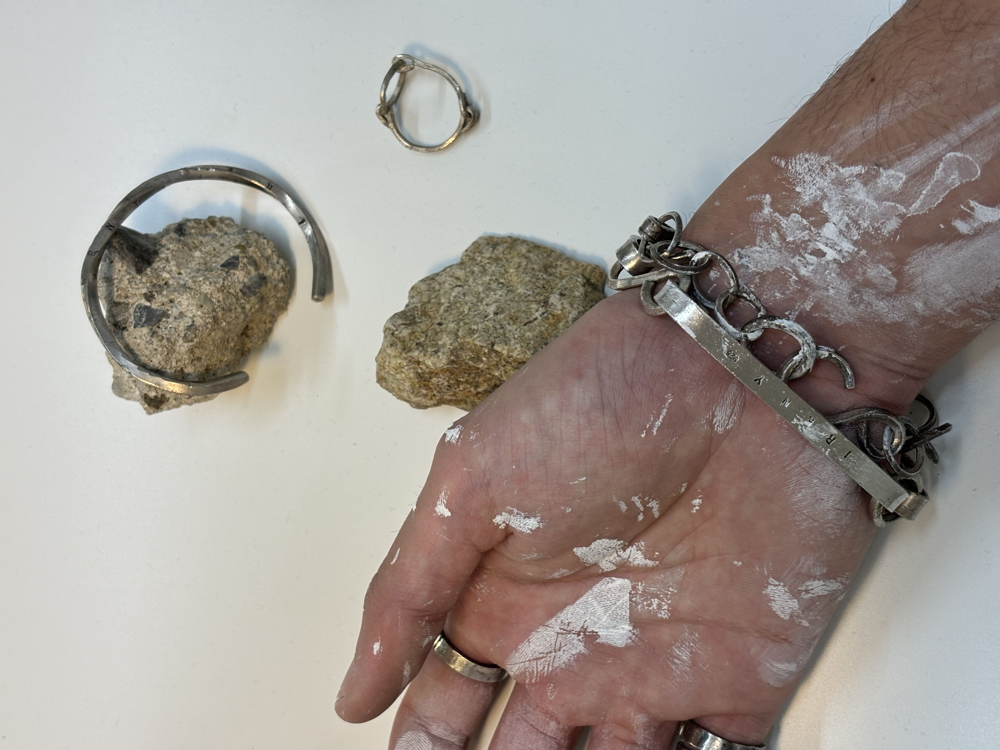

人の目を気にしないことです。
他人にフォーカスして選んでも、
そのものの価値を決める判断を相手に委ねてるだけです。
あなたが着けるるんだから、あなたが決めないと。
ただ、相手の目を気にする、って言うことが自分の判断であり、
俯瞰した上で理解しているのなら、止めることはないです。
自分の付けたいもの、ビビッときたものをお選びくださいね。
無かったら買わないでください。
好きじゃないもの買っても、僕から買っていただいても、
お互い良い気がしないじゃないすか。
そんくらい、あなたの感性も大事にしたいです。もちろん僕の感性もね。
ただ僕のアクセサリーのバイタリティ、独創性は限りなく高いです。
そこに幾らか意味を持っていただけたら、と思ってます。

HOME